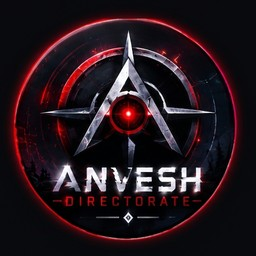
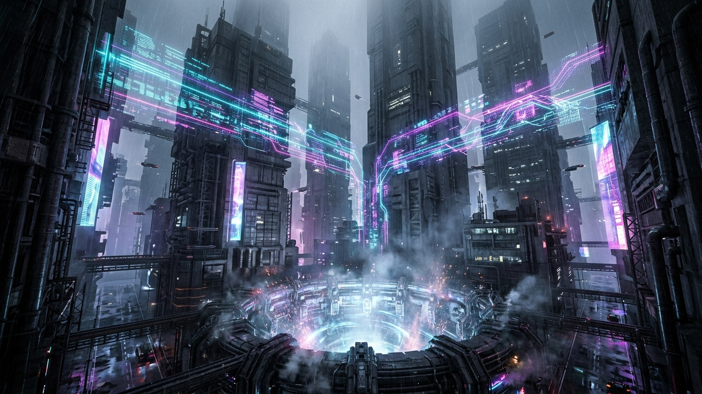
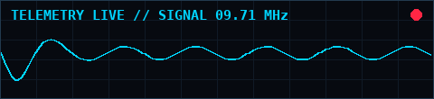

DIRECTORATE STATUS
OPERATIONAL
All 6 Directorate divisions online

ANVESH DIRECTORATEANOMALY NETWORK FOR VERIFICATION, EVIDENCE, SCIENCE & HISTORY
DIRECTORATE RECORD // MULTIVERSE HUB // NODE IND-01
INVESTIGATE. VERIFY. UNDERSTAND.
“Every anomaly leaves evidence. Every investigation brings us closer to the truth.” Welcome to the connected digital ecosystem of the ANVESH Multiverse—linking case dossiers, official scientific reports, field operatives, timeline indices, and forensic evidence.

COMMAND TELEMETRY // SECTOR IND-01
NEW ANVESH SIGNATURE STYLE DISPATCH // 00:53 PROMO REEL
Five black luxury SUVs pull up outside your restaurant, and billionaire meme legend Sheru Bhai walks in offering $10,000 (₹9.2 Lakh) in cash. Follow all 7 survival rules—Contestant #42 (Rohan, Age 21) took the $5,000 early exit bribe and remains emotionally recovering. Enter key AV-165-G-SHERU below to trigger the hidden Directorate Easter Egg.
INTERCEPTED VERTICAL BRIEFING // 00:55 CLIP

At 03:14 AM, targeted endpoints receive an unsolicited push notification reading only "Hi!". Opening the app breaches Rule 1; reading the hidden sidebar breaches Rule 2; answering "Are you okay?" breaches Rule 3. Suspect 164 (Tom, Age 16) escalated past Rule 3 and remains ACTIVE. During Rule 7, key AV-164-MV-GPT triggered an immediate Directorate Override.

RECORDS & INVESTIGATIONS
ARCHIVE QUICK PREVIEW // FICTIONAL RECORD
CONNECTED INVESTIGATION ECOSYSTEM
Classified personnel database profiling ALPHA-01, ALPHA-02, ALPHA-03, ALPHA-04, and restricted founder ALPHA-00, cross-linked to every case and evidence item.
Interactive timeline topology mapping Baseline Reality (IND-01), Parallel Archive (IND-02), and Temporal Node (ARC-04) with clickable SVG nodes.
Central forensic repository across 8 categories (Audio, Video, Photos, Blueprints, Hex Dumps, Cesium Logs, Transmissions, Physical Cores) with 6-step Chain of Custody.
INTERNAL ORGANISATIONAL STRUCTURE
Rapid field deployment, witness interviews, environmental LiDAR surveying, and physical incident reconstruction across reported anomaly sites.
Scientific verification, optical and acoustic laboratory testing, cognitive perception studies, and falsification of conventional explanations.
Acoustic-Faraday shielding, spatial boundary stabilization, and safe quarantine of physical artifacts exhibiting anomalous properties.
Radio-frequency spectrum monitoring, non-terrestrial carrier decryption, waveform forensics, and cross-channel dispatch verification.
Cryptographic chain-of-custody, blueprint digitization, redaction auditing, and public declassification of verified case dossiers.
INTEGRITY: 99.98%Investigation of cesium chronological drift, parallel node handshakes (IND-02), and cross-timeline storytelling convergence.
DIRECTORATE METHODOLOGY // NO ASSUMPTIONS
Automated spectrum monitors, blueprint audits, and external creator tips flag potential anomalies.
Raw waveforms, silver-halide prints, and 3D LiDAR scans are captured under strict chain of custody.
DIV-02 analysts test for hoaxing, sensor error, or environmental interference before escalating.
Field operatives reconstruct timelines and correlate findings across connected multiverse channels.
Each dossier is assigned a verified scientific explanation, containment protocol, or open watch status.
Declassified findings and Official Case Reports are published in the permanent ANVESH Digital Archive.
INCOMING TRANSMISSION // LIVE LOG
A restricted communication was received by Central Command on frequency 09.71 MHz. Origin and authorization remain unverified.
“The investigation has already begun.”
CROSS-CHANNEL VERIFICATION
Recovered an ANVESH Signal Key from an active transmission? Enter it below to unlock the authorized explanation and linked dossier.
SEARCHABLE & FILTERABLE DATABASE // FICTIONAL RECORDS
CLASSIFIED PERSONNEL DATABASE // OPERATIVE PROFILES
FICTIONAL STORY-WORLD TOPOLOGY // TIMELINE BRANCHES
| Reality ID | Designation & Name | Timeline Class | Current Status | Origin Case | Action |
|---|
CENTRAL FORENSIC REPOSITORY // 8 CATEGORIES
CROSS-CHANNEL VERIFICATION TERMINAL
Enter an authorized ANVESH Signal Key below to decrypt the override log, case summary, and linked dossier. Enter a code below to unlock its declassified forensic explanation, linked case dossier, and official printable report.
SECURITY & ARCHITECTURE TRANSPARENCY
1. Fictional Demonstration Status: Codes ANV-SOL-001, ANV-SOL-002, and ANV-SOL-003 are initial demonstration codes designed to showcase cross-channel storytelling. External creator content is only integrated with explicit permission.
2. Client-Side vs. Server-Side Validation: Any code table stored in browser JavaScript can be inspected via Developer Tools. We never misrepresent frontend-only checks as cryptographic security.
3. Netlify Functions Backend Included: For genuine secret code protection during live creator events, the downloadable project package includes a ready-to-deploy serverless endpoint at netlify/functions/validate-code.js.
ORIGIN & STORYTELLING MISSION

ANVESH Directorate (Anomaly Network for Verification, Evidence, Science & History) is a fictional secret research organisation and the narrative anchor of the ANVESH Multiverse.
Across our connected YouTube investigations, official case reports, Agent Registry, Multiverse Index, and Evidence Room, the Directorate examines unexplained transmissions, digital anomalies, architectural impossibilities, and disturbances rippling across parallel timelines.
Our core mandate—“INVESTIGATE. VERIFY. UNDERSTAND.”—treats mystery storytelling with the rigor of a forensic laboratory: every claim requires evidence, and every investigation brings us closer to the truth.
While our interface is inspired by classified scientific archives and anomaly containment facilities, ANVESH Multiverse is strictly an original work of fictional entertainment.
ORGANISATIONAL HIERARCHY & CLEARANCE TIERS
Granted to all visitors of the public terminal. Full access to declassified dossiers, official A4 case reports, and the Case Solution Access system.
Assigned to Division specialists (ALPHA-01, ALPHA-02, ALPHA-03, ALPHA-04) operating across Regional Nodes IND-01, IND-02, and ARC-04.
Oversees cross-timeline convergence files. Tip: Type ALPHA on your keyboard or enter ALPHA-00 in Solution Access to inspect the Origin Dossier.
Field incident reconstruction, witness correlation, and physical site reconnaissance across reported anomaly zones.
Materials science, optical interferometry, and double-blind testing to separate natural phenomena from true anomalies.
Deployment of acoustic dampening domes, Faraday cages, and architectural quarantine barriers.
Monitoring of 09.71 MHz carrier anomalies, Baudot/sub-carrier decoding, and inter-node telemetry security.
Preservation of physical magnetic reels, silver-halide prints, diazo blueprints, and public declassification logs.
Tracking chronological drift (Case ANV-TMP-005) and alternate Directorate handshakes (Node IND-02).
SIGNAL INTELLIGENCE DISPATCH LOG
Intercepted on Central Command emergency band. Acoustic profile matches no known terrestrial transmitter. Waveform exhibits reverse-time phase symmetry.
Automated telemetry alert from Vault C1 confirming a 48-second chronological divergence during optical-lattice synchronization. Linked to Case ANV-TMP-005.
Fiber trunk 09 received a valid Directorate cryptographic signature dated 11 years before the founding of Node IND-01. Linked to Case ANV-CLS-006.
COMMUNICATIONS RELAY & CREATOR COLLABORATIONS
For direct inquiries, creator collaborations, or archive clearance requests, email the ANVESH Directorate directly:
Are you a mystery, ARG, or analog horror filmmaker interested in connecting your story to the ANVESH Multiverse?
We issue custom ANV-SOL-XXX Solution Codes exclusively with mutual creator consent, allowing your audience to decrypt lore extensions directly on the ANVESH Archive while driving viewers back to your channel.
DISPATCH PROTOCOL: Submissions are logged under Status: OPEN for Directorate review. Email addresses remain confidential.
LIVE ARCHIVE DISPATCH LOG
CONNECTING TO ANVESH DISPATCH DATABASE...
DATA PROTECTION & ZERO-SURVEILLANCE POLICY
The ANVESH Directorate website does not load third-party advertising trackers, behavioral fingerprinting scripts, or covert analytics cookies.
Your Safe Exit / Neutral View preference is stored locally in your own browser via localStorage (`anvesh_safe_exit`) solely to remember your accessibility choice across reloads.
Information submitted through the Contact form or sent to anveshdirectorate@proton.me is used exclusively to respond to creator collaboration or project inquiries and is never sold or shared with third parties.
INTELLECTUAL PROPERTY & USAGE GUIDELINES
All original ANVESH Directorate branding, case narratives, emblems, and custom illustrations are part of the ANVESH Multiverse creative project.
Visitors are encouraged to share theories, decode Solution Codes, and discuss case files. Users must not misrepresent fictional ANVESH records as real-world government advisories or emergency alerts.
Cross-channel Solution Codes and linked investigations are integrated strictly with the permission of participating creators.
MANDATORY TRANSPARENCY STATEMENT
ANVESH Multiverse and the ANVESH Directorate are entirely fictional creations designed for mystery storytelling, analog horror entertainment, and interactive worldbuilding.
All personnel designations (including ALPHA-01, ALPHA-02, ALPHA-03, ALPHA-04, and ALPHA-00), case files, official investigation documents, reality indices, forensic evidence records, telemetry coordinates, and clearance codes depicted on this website are imaginary.
This website is not affiliated with, endorsed by, or representative of any real-world government, intelligence agency, law-enforcement body, scientific institute, or emergency-response service. In the event of any real-world emergency, always contact your local official emergency services.
The archive sector or URL coordinate you requested does not exist in Baseline Node IND-01. It may have been relocated or never recorded.
This archive file is currently set to PRIVATE and requires elevated Directorate clearance. For inquiries, contact anveshdirectorate@proton.me, or explore active public Case File AV-164.
An unexpected internal fault interrupted the archive relay. Server internals remain masked for security. Please return to the main terminal.